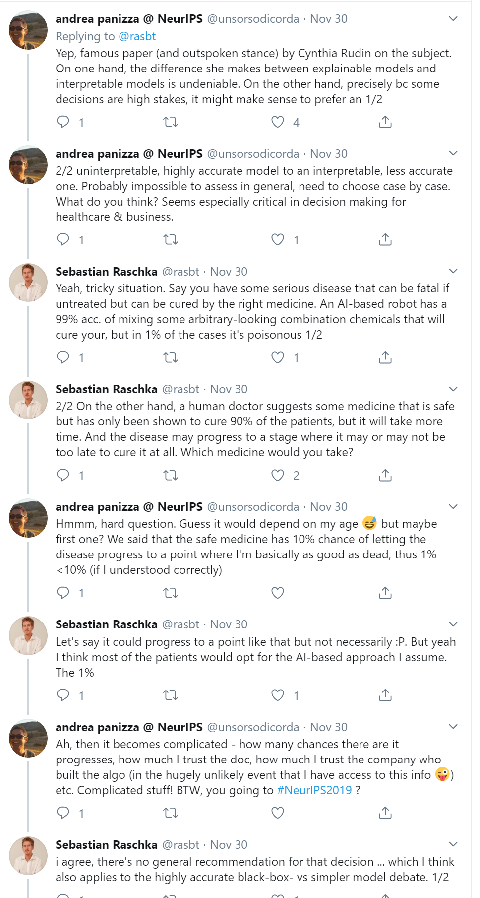
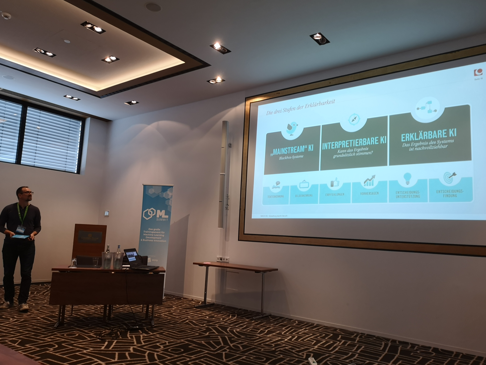

Techniken 1. Surrogate Modell plus Introspektion 2. What If / Icicle Plots 3. Lime, Shap etc.
### Stop Explaining Black Box Machine Learning Models for High Stakes Decisions and Use Interpretable Models Instead https://arxiv.org/abs/1811.10154
### Diskussion zu Artikel darüber https://twitter.com/rasbt/status/1200811980535353344 
### Allgemein ist die Systematik anders als bei MACH Interpretable > Explainable 
### Post pruning decision trees with cost complexity pruning https://scikit-learn.org/dev/auto_examples/tree/plot_cost_complexity_pruning.html
## Surrogate Models ### Scaling down using a surrogate model https://colab.research.google.com/github/DJCordhose/ml-workshop/blob/master/notebooks/tf2/tf-surrogate-model.ipynb http://bit.ly/scaling-down-2020